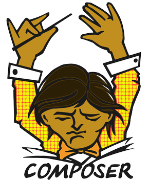

PHP, sans doute l'un de mes langages préféré, utilisé pour quasiment tout mes projects contenant du
back-end, et langage sur lequel repose, sans doute mon plus gros projet, Bubu Framework.
Et il nous faut bien notre mannequin
Un peu de maquillage pour habiller un site, c'est bien non?
Ceci avec un peu de javascript pour dynamiser le tout
Et du SQL pour communiquer avec les bases de données
Le python ça ne fait pas si peur que ça!
Et un peu d'électronique aussi avec Arduino!
Mes outils utilisés

Mes diplômes & certifications
Savoir nager, pratique lors de séminaire
A.S.S.R 1 & 2, mais pas le code
Teste PCR, négatif!
DNB, avec les félicitations
[Prochainement] Passage sur PSC-1, Staying alive, Staying alive, ah aha ha yeah
[Prochainement] Passage du bac, déjà, oh lala ça va trop viteeee!
Discord, compétences reconnus sur plusieurs serveurs avec pour l'un d'eux +10k membres